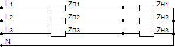
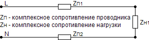

Калькулятор расчета потерь напряжения в кабеле
Потеря напряжения в кабеле - величина, равная разности между установившимися значениями действующего напряжения, измеренными в двух точках системы электроснабжения (по ГОСТ 23875-88).
Калькулятор позволяет выполнить расчет потерь напряжения на постоянном(cosφ=1; 1 фаза) и переменном токе. В полях где укзаны значения по умолчанию поставьте свои значения.
*Формат ввода - х.хх (разделитель - точка)
Для расчёта потерь линейного напряжения U=380 В; 3 фазы.
Для расчёта потерь фазного напряжения U=220 В; 1 фаза.
Для постоянного тока cosφ=1; 1 фаза.
P - активная мощность передаваемая по линии, Вт;
Q - реактивная мощность передаваемая по линии, ВАр;
R - удельное активное сопротивление кабельной линии, Ом/м;
X - удельное индуктивное сопротивление кабельной линии, Ом/м;
L - длина кабельной линии, м;
Uл - линейное напряжение сети, В;
Uф - фазное напряжение сети, В.
Методика расчета:
|  |  |
| Рис.1 | Рис.2 |
При равенстве сопротивлений Zп1=Zп2=Zп3 и Zн1=Zн2=Zн3 ток в нулевом проводе отсутствует (Рис.1), поэтому для трёхфазных линий потери напряжения рассчитываются для одного проводника.
В двух- и однофазных линиях, а также в цепи постоянного тока, ток идёт по двум проводникам (Рис.2), поэтому вводится коэффициент 2 (при условии равенства Zп1=Zп2).
Расчёт потерь линейного (между фазами) напряжения в кабеле при трёхфазном переменном токе производится по формулам:
ΔU(в)=(PRL+QXL)/Uл; ΔU(%)=(100(PRL+QXL))/ Uл² или (если известен ток)
ΔU(в)=√3·I(R·cosφ·L+X·sinφ·L); ΔU(%)=(100√3·I(R·cosφ·L+X·sinφ·L))/ Uл , где:
Q= Uл·I·sinφ
Расчёт потерь фазного (между фазой и нулевым проводом) напряжения в кабеле производится по формулам:
ΔU(в)=2·(PRL+QXL)/Uф; ΔU(%)=2·(100(PRL+QXL))/ Uф² или (если известен ток)
ΔU(в)=2·I(R·cosφ·L+X·sinφ·L); ΔU(%)=2·(100·I(R·cosφ·L+X·sinφ·L))/Uф, где:
Q= Uф·I·sinφ